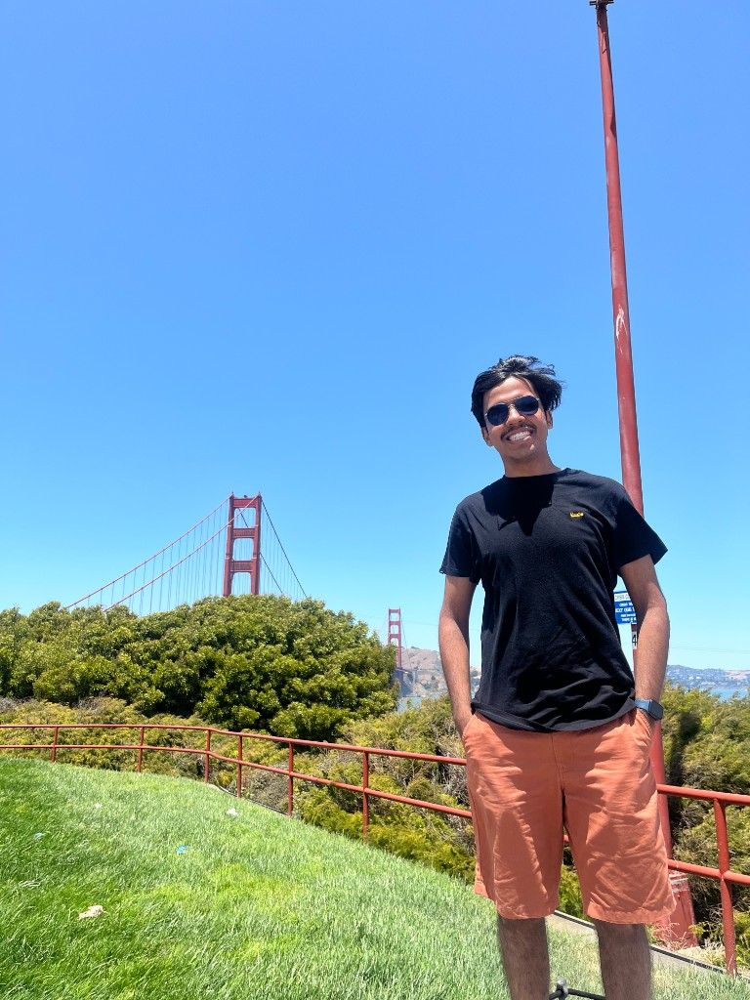

Embodied AI · Computer Vision · Continual Learning
I'm a Graduate Researcher at NYU Courant, working with Prof. Saining Xie on long-context video understanding, efficient sequence modeling, and spatial reasoning in vision systems.
My broader interests sit at the intersection of computer vision, continual learning, and embodied AI — building visual systems that perceive, reason about, and act in physical environments.
Before NYU, I was a Pre-Doctoral Fellow at the Kotak IISc AI-ML Research Centre where I published at CVPR 2025. I also co-founded Physi.Fit — an idea that started with my own ACL injury and became a funded AI healthcare platform.

Continual learning framework using visual prompt tuning (<1M parameters) for panoptic segmentation in autonomous driving. Achieves state-of-the-art 62.3 mIoU on Cityscapes while preventing 53% catastrophic forgetting.
First multi-sensor, multi-domain slant-angle EO-IR dataset (50K+ aligned pairs) for UAV perception. Addresses occlusion and scale challenges in aerial object detection and semantic segmentation. Pix2Pix GAN cross-modal synthesis achieves 0.85 SSIM, improving all-weather perception by 28%.
Graph labeling framework for ranking multimodal conversations via emotional concordance scoring. Uses late fusion in graph attention networks to learn node importance through representation learning — outperforming prior state-of-the-art.
Patented deep learning framework fusing video-based pose estimation with multi-modal biomarkers via attention-based GNNs, for real-time orthopedic rehabilitation monitoring. Deployed across 17 healthcare facilities.